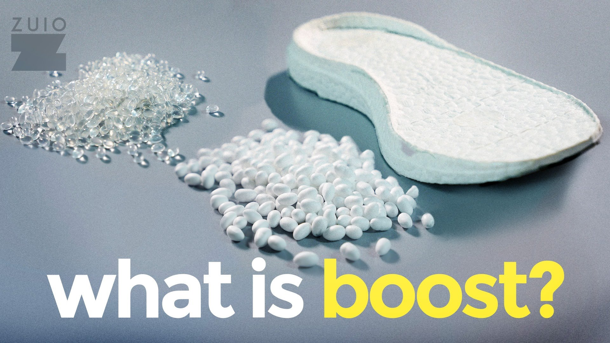
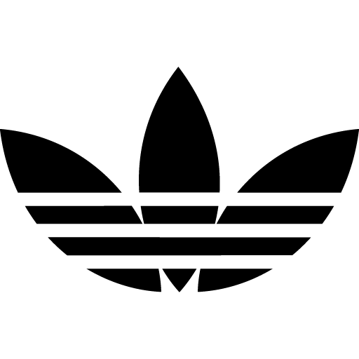

AN INTRODUCE OF SOME ADIDAS BOOST
---Click here to see what the BOOST look like---

---Close this image!!---
The Boost sole uses a material called thermoplastic polyurethane (or TPU) to form its bundle tightly packed sole nuggets.
Just like the more traditional midsole material, EVA, TPU compresses under pressure for shock absorption
What’s unique about the adidas tech is the ability to instantly bounce back to its original shape.
By moulding together lots of small capsules, they are allowed to ping back into shape quicker and easier than one big slab of sole could.
The frisky foam is able to retain these properties despite temperature variation, being almost impervious to the elements,
where EVA has been observed to stiffen in the cold.
---Best Selling Shoes That Use BOOST---
---The Growing Of Adidas---
The strong growth for Adidas in the 2016 second quarter,
which builds on a 21.8% increase a year ago after two years of declines,
implies the turnaround story has got some traction.
---Some Of The Shoes That Use BOOST---
--Adidas NMD--
--Adidas V2 350--
--Adidas Ultra Boost--
--Adidas EQT Boost--
| Adidas NMD |
| 1. ADIDAS NMD XR1 PK Bright Cyan |
| 2. Adidas Human Race Tangerine |
| 3. ADIDAS NMD "BEDWIN" NAVY |
| 4. Adidas NMD Bright Cyan |
| 5. ADIDAS NMD R1 BAPE "GREEN CAMO" |
|
Adidas V2 350 |
| 1. ADIDAS YEEZY 350 V2 BLACK/COPPER |
| 2. ADIDAS YEEZY 350 V2 BRED |
| 3. ADIDAS YEEZY BOOST 350 V2 BLACK/RED |
| 4. ADIDAS YEEZY BOOST 350 V2 ZEBRA |
| 5. ADIDAS YEEZY BOOST 350 V2 BLACK/WHITE |
| Adidas Ultra Boost |
| 1. ADIDAS ULTRA BOOST TEXAS A&M |
| 2. Adidas Ultra Boost Olive 1.0 |
| 3. ADIDAS ULTRA BOOST MID KITH |
| 4. ADIDAS ULTRA BOOST "REIGNING CHAMP" |
| 5. ADIDAS ULTRA BOOST TRIPLE BLACK 2.0 |
| Adidas EQT Boost |
| 1. ADIDAS EQT SUPPORT BOOST 93-16 |
---Click here to REMOVE the form!!---
---Top 4 Of The Adidas Shoes Recently---
1---Adidas Yeezy Boost 750 「Glow in the Dark」
-
提起Yeezy，你最先想到的是什麼，應該就是曾經Nike時期最經典的夜光大底
但是來到Adidas之後，似乎在刻意的拋去任何Nike時期的經典元素
讓人們重新認識Yeezy系列，帶有Boost科技的，更加潮流化的款式
但是今年的這雙夜光回歸的版本，似乎讓人們充滿了期待，這才是Yeezy應該有的樣子
你會發現明星，網紅，都急於上腳這雙夜光版本的750，這就是為什麼這款鞋子的價格依舊高昂
2---Adidas 3D Runner
-
Adidas的第一 雙3D列印球鞋，僅僅發售了333雙
這雙鞋不僅僅代表著一種設計，或者是一種潮流，它代表的是未來的一種趨勢
可以按每個人的腳型定製化的趨勢，3D列印的趨勢
這就是Adidas獻出的最好的禮物，給未來的鞋子
3---Adidas Harden Vol 1
-
Adidas今年另一次的逆襲來自於籃球鞋的領域，你們有多久沒有如此期待過一雙Adidas的籃球鞋了
Boost和James Harden 似乎成為了最好的組合，出現在完美的時刻
不再拘泥於傳統的設計風格，Harden似乎要重新建造一個屬於自己的王國
大鬍子自從來到火箭當上休斯頓之王，就一直對自己的職業生涯和風格有著自己的規劃
而球鞋也是一樣，Adidas大合同簽下Harden就像是一場賭注，沒有人為他設計過球鞋，這場賭注最大的籌碼就是哈登的個人魅力
再次運用皮質作為球鞋的材質，不對稱的鞋帶設計，和Boost緩震系統，都讓這款球鞋成為了籃球鞋領域的話題之王
有多久沒有新技術可以在球場上馳騁了？有多久沒碰過皮質籃球鞋了？
在眾多塑料及編織面料的球鞋旁邊，Harden的這款鞋子似乎多了幾分質感
Adidas讓籃球鞋重新回到大眾的視線里，回到球場，更是在試圖慢慢侵占日常的運用
一雙曾經那樣可以打球，可以壓馬路的籃球鞋也許就在路上？
4---Adidas Yeezy Boost 350 v2
-
Yeezy Boost 系列絕對是現在世界上最潮流的鞋款了，無數人依舊在翹首以盼
350更是Kanye West 和Adidas打造的殺手鐧，這雙鞋子在世界各地取得了成功
初代的版本最近已經停止發售，Adidas將其升級到了V2的版本，在細節地方稍微有一點小的修改
最大的區別在於新球鞋的鞋幫更高，上面加入了SPLY350的字樣
在產量上，Adidas也加大了V2的生產量
這樣的高產量會降低Yeezy系列的炒賣價格，但是也讓更多的人可以有機會入手一雙Yeezy
Adidas更是做了一件從未發生在Yeezy系列的發售方式，一次發售了三個配色
Kanye曾經保證過每個人都會擁有Yeezy，但是這樣的事情即將成為現實。
---Click To Hide The Rank!!---
